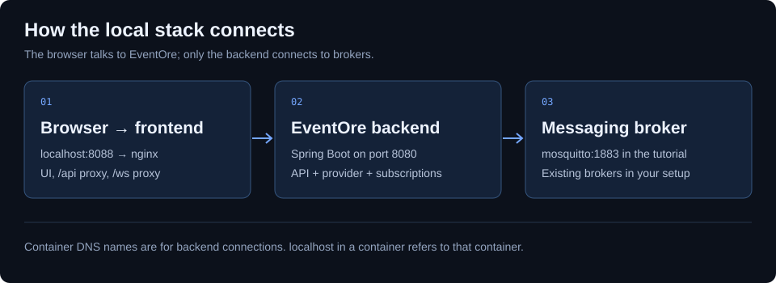

Examples: your first message
A complete local MQTT lab with a broker, EventOre, sample payloads, and API requests.
This tutorial runs on Docker with Compose and Git. It builds a MQTT-only backend from this checkout, starts Mosquitto, and serves the console on port 8088. The first build needs internet access and can take several minutes. Ports 8080 and 8088 must be available.
1. Start the lab
git clone https://github.com/vijayptiwari/eventore.git
cd eventore
docker compose -f docs/examples/mqtt-compose.yaml up -d --build
docker compose -f docs/examples/mqtt-compose.yaml psOpen http://localhost:8088. The backend should become healthy. The exact lab files are mqtt-compose.yaml and mosquitto.conf; keep them together under docs/examples in the checkout because the build paths are relative.

2. Create the MQTT profile
In Connections, enter these values and save the profile:
- Name
local-mqtt- Protocol
MQTT- Broker URL
tcp://mosquitto:1883- Topic filter
events/#- Credentials
- Leave empty for this local lab.
Validate the connection. Then open Live Stream, select local-mqtt, enter events/orders, and choose Add to side panel.
3. Send and inspect a message
Wait for the stream to start. Paste this into the Publish field and select Publish:
{"event":"order.created","orderId":"demo-1001","total":49.95,"currency":"USD"}Expected result: a publish acknowledgement, an increased message count, and a received payload containing demo-1001. MQTT live subscriptions do not replay earlier non-retained messages. If nothing arrives, publish another message after the stream has started.
4. Repeat with the REST API
Run from the repository root. These examples use curl; in Windows PowerShell use curl.exe. If you created a profile in the UI, list it and reuse its id. Otherwise create it from the sample file:
curl http://localhost:8080/api/v1/connections
curl -X POST http://localhost:8080/api/v1/connections -H "Content-Type: application/json" --data-binary "@docs/examples/mqtt-connection.json"Copy the returned id. Replace CONNECTION_ID in each command below with that actual value:
curl -X POST http://localhost:8080/api/v1/connections/CONNECTION_ID/validate
curl -X POST http://localhost:8080/api/v1/connections/CONNECTION_ID/publish -H "Content-Type: application/json" --data-binary "@docs/examples/publish-order.json"Keep the UI stream running while publishing. The publish request uses a string payload containing JSON, not a nested JSON object:
{
"destination": "events/orders",
"payload": "{\"event\":\"order.created\",\"orderId\":\"demo-1001\",\"total\":49.95,\"currency\":\"USD\"}"
}
Download connection JSON and publish JSON. For an authenticated deployment, add Authorization: Bearer YOUR_TOKEN to API requests. See authentication.
5. Stop the lab
docker compose -f docs/examples/mqtt-compose.yaml downThis removes the tutorial containers and network. Images remain cached. This lab does not enable durable connection persistence or broker message storage; recreate the profile after rebuilding the environment.
Next: complete user guide · Kafka setup · diagnose connection problems.